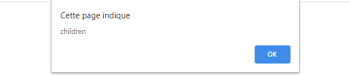
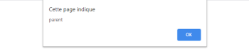

En JavaScript les événements sont soumis à deux phases : la phase de capture et la phase de bouillonnement (bubbling).
Lorsqu'un événement est déclenché, JavaScript parcourt l'ensemble du code en partant de l’ancêtre le plus haut (html) et descend jusqu'à l'élément ayant déclenché l’événement. On appelle ça la phase de capture.
Une fois la phase de capture finie, JavaScript parcourt le code en sens inverse, et ce n'est qu'à ce moment qu'il déclenche l’événement lorsqu'il le croise. On appelle cette action la phase de bouillonnement.
See the Pen Untitled by OpenSpirit (@OpenSpirit) on CodePen.
Nous avons relié un événement click à parent et à children. Que se passe t-il lorsque l'on click sur children ?
La première alerte qui s'affiche et celle provoquée par children. La phase de capture est descendue jusqu'à l'élément écoutant l'événement. Au début de la phase de bouillonnement, JavaScript a exécuté l'événement.
Une deuxième alerte s'affiche. Durant la phase de bouillonnement, JavaScript a exécuté l'événement écouté par le parent.
Il existe deux méthodes pour modifier ce comportement :
Cette méthode vient se positionner à l'intérieur de la fonction de callback de l’élément écouteur. La méthode stopPropagation() va annuler la phase de bouillonnement à partir du moment où le code rencontrera l'instruction. Ainsi, l’événement ne remontera pas jusqu'à la div parent.
See the Pen Untitled by OpenSpirit (@OpenSpirit) on CodePen.
Cette solution consiste à modifier le paramètre optionnel de la méthode addEventListener() et de la passer à true. Dans ce cas, le code exécutera l'événement durant la phase de capture et annulera la phase de bouillonnement.
See the Pen Untitled by OpenSpirit (@OpenSpirit) on CodePen.
Dans le cas présent, on ignore la phase de bouillonnement et les événements sont exécutés pendant la phase de capture. Ainsi, en cliquant sur children, l'alerte parent s'affichera en premier, puis l'alerte children en second. Le comportement est inversé.